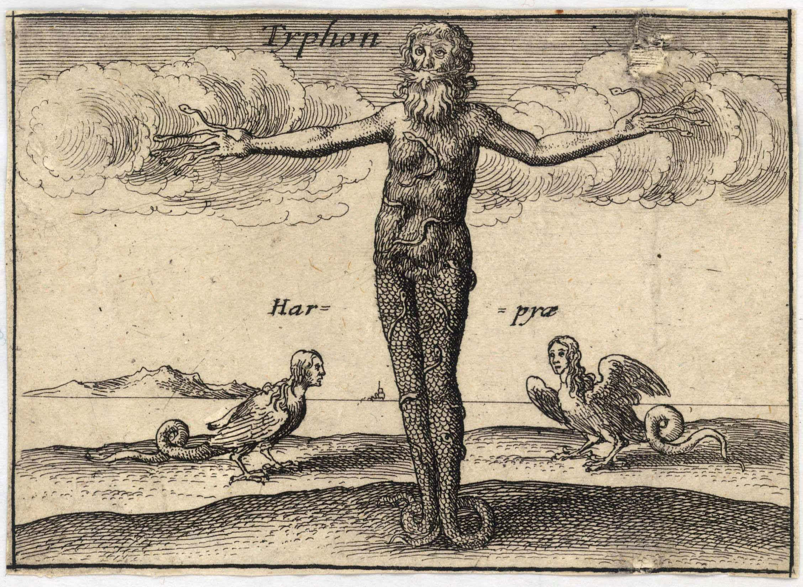
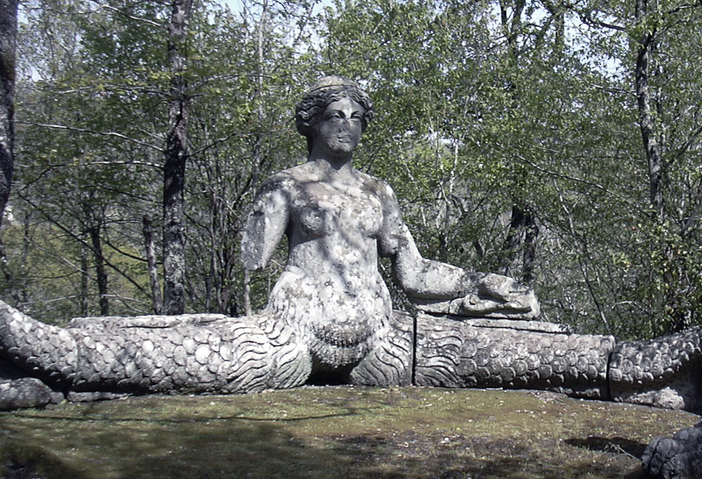

希腊神话中怪物的始祖是堤丰（Typhon）和厄喀德那（Echidna），两人结合生下了神话中大部分怪物。
Hesiod称堤丰是盖亚（Gaia）和塔尔塔洛斯（Tartarus）的儿子。也有人称堤丰是赫拉（Hera）单性生殖的儿子，还有人称堤丰是克洛诺斯（Cronus）的后代。

据说，堤丰长的非常高大，比一座山还要大。他的脖子上有100个头，眼睛会喷火。他每个脑袋发出的声音都不一样，有的像野兽的声音，有的像人的声音，但是都非常的恐怖。堤丰出生的时候，正是提坦巨人们被宙斯和奥林匹斯众神打败的时候，于是盖亚就让堤丰去为提坦们报仇。战斗刚开始的时候，堤丰将许多神逼到了埃及，这些神都变成了各种动物。他还抓住了宙斯，用宙斯那坚硬无比的镰刀割断了宙斯的肌腱，将宙斯关押在西里西亚（Cilicia）。后来赫耳墨斯救出了宙斯，宙斯终于打败了堤丰。堤丰倒下的时候，造成了火山喷发。最后，宙斯将堤丰关在了塔尔塔洛斯的深处。
堤丰的妻子是厄喀德那（Echidna）。厄喀德那是半人半蛇的怪物。她上半身是美貌的女子，下半身却是蛇的躯体（有时有两条蛇尾）。这两人是希腊神话中妖怪的始祖（progenitor），她们生下了许多著名的妖怪。

他们的孩子有：
水蛇许德拉（Hydra）
涅墨亚的狮子（Nemean lion）
看守地狱之门的狗刻耳柏洛斯（Cerberus）
双头狗Orthus（俄耳托斯）尾巴是一条蛇，守护Geryon的牛群，被赫剌克勒斯杀死。
（Chimaera）喀迈拉：会喷火的怪兽，它的前部是狮子，尾巴是一条蟒蛇，身子是山羊。它呼吸吐出的都是火焰。
狮身人面斯芬克斯（Sphinx）
一头巨大的野猪Crommyonian sow
啄食普罗米修斯肝脏的鹰
百头巨龙拉冬（ladon）：和赫斯珀里德斯（Hesperides）一起看守金苹果。